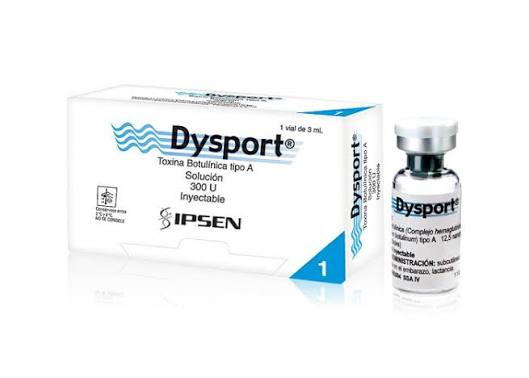

¿Qué es Dysport?
Dysport es abobotulinumtoxinA, una preparación de toxina botulínica tipo A para uso por profesionales de la salud capacitados.
Medicina estética
300 U · 500 U
Toxina botulínica tipo A en 300 U y 500 U.
Dysport en presentaciones de 300 U y 500 U, con atención comercial especializada para médicos y clínicas.

Dysport es abobotulinumtoxinA, una preparación de toxina botulínica tipo A para uso por profesionales de la salud capacitados.
La documentación oficial contempla indicaciones terapéuticas y estéticas específicas. La selección de indicación, dosis y técnica corresponde exclusivamente al profesional tratante.
Actúa inhibiendo la liberación de acetilcolina en la unión neuromuscular, lo que reduce temporalmente la actividad muscular en el área tratada.
Fuente principal: Galderma · Dysport PI
Información comercial
Confirmamos existencia al momento de tu cotización.
El precio depende de la presentación (300 U o 500 U) y del volumen solicitado. No publicamos precios porque cada cuenta profesional recibe una cotización según sus necesidades. Solicitar cotización por WhatsApp.
MG Dermalab
Selecciona 300 U o 500 U y comparte la cantidad requerida para consultar disponibilidad. Atendemos solicitudes de profesionales de la salud, clínicas y farmacias cuando corresponde.
Información del producto
Datos comerciales ya publicados por MG Dermalab.
Revisamos lote, caducidad y empaque antes del envío y trabajamos con laboratorios reconocidos. Conoce nuestro proceso de revisión.
Coordinamos cobertura, costo y tiempo antes de procesar el pedido. Consulta cómo coordinamos los envíos.
Antes de cotizar
Sí, ambas presentaciones se consultan con disponibilidad sujeta a confirmación.
No. La información oficial señala que sus unidades no son intercambiables con las de otros productos.
Únicamente profesionales de la salud con capacitación y autorización aplicables.
Indica presentación, número de piezas y ciudad por WhatsApp.
Atención directa
Comparte la presentación, cantidad y ciudad. Nuestro equipo revisará tu solicitud y confirmará las opciones disponibles.